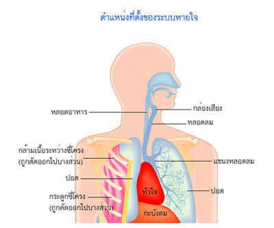

ระบบหายใจ

● ความสำคัญและหน้าที่
ทำหน้าที่รับออกซิเจนเข้าสู่ร่างกายและขับคาร์บอนไดออกไซด์ออก เพื่อใช้สร้างพลังงานในการดำรงชีวิต
● อวัยวะเกี่ยวข้องที่สำคัญ
1.จมูกและโพรงจมูก
- ทำหน้าที่รับอากาศ กรองฝุ่นละออง และช่วยเพิ่มความชื้นและอุณหูมิของอากาศก่อนเข้าสู่ทางเดินหายใจ
2. คอหอยและกล่องเสียง
- เป็นทางผ่านของอากาศ กล่องเสียงยังเกี่ยวข้องกับการเกิดเสียง
3. หลอดลม
- ทำหน้าที่นำอากาศเข้าสู่ปอด และแตกแขนงเป็นหลอดลมฝอย
4. ปอด
เป็นอวัยวะหลักของระบบหายใจ ภายในมีหลอดลมฝอยและถุงลมจำนวนมาก
5. ถุงลมปอด
เป็นบริเวณที่เกิดการแลกเปลี่ยนแก๊ส โดยออกซิเจนจะแพร่จากถุงลทเข้าสู่เลือด และคาร์บอนไดออกไซด์จะแพร่จากเลือดเข้าสู่ถุงลม
● กลไกการหายใจ
- เมื่อหายใจเข้า กะบังลมจะหดตัวและเคลื่อนตัวต่ำลง ทำให้ปริมาตรในช่องอกเพิ่มขึ้นอากาศจึงเข้าสู่ปอด เมื่อหายใจออก กะบังลมจะคลายตัวและเคลื่อนสูงขึ้น ทำให้ปริมาตรในช่องอกลดลง อากาศจึงถูกดันออกจากปอด
● การดูแลระบบหายใจ
ควรหลีกเลี่ยงควันบุหรี่และมลพิษทางอากาศ ออกกำลังกายให้เหมาะสม พักผ่อนให้เพียงพอ และรักษาสุขอานามัยของระบบทางเดินหายใจ